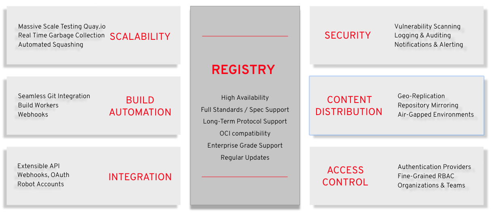
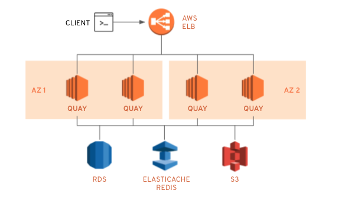
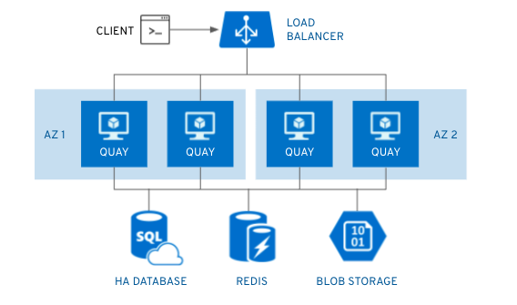
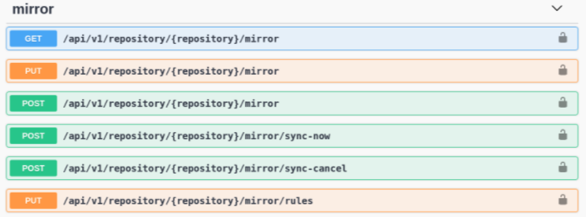
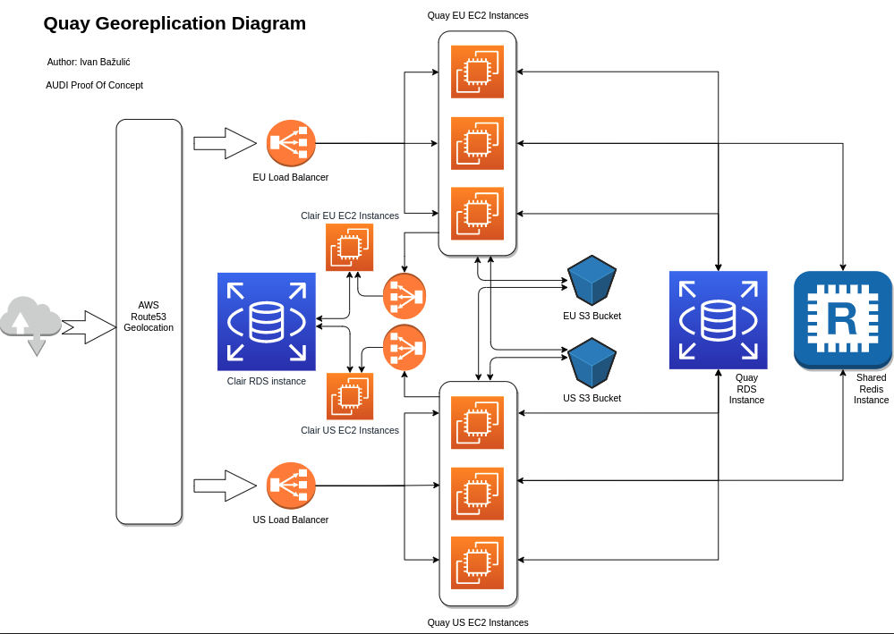
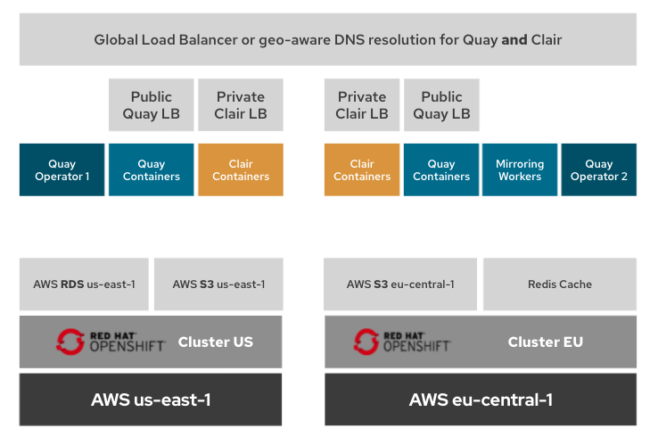
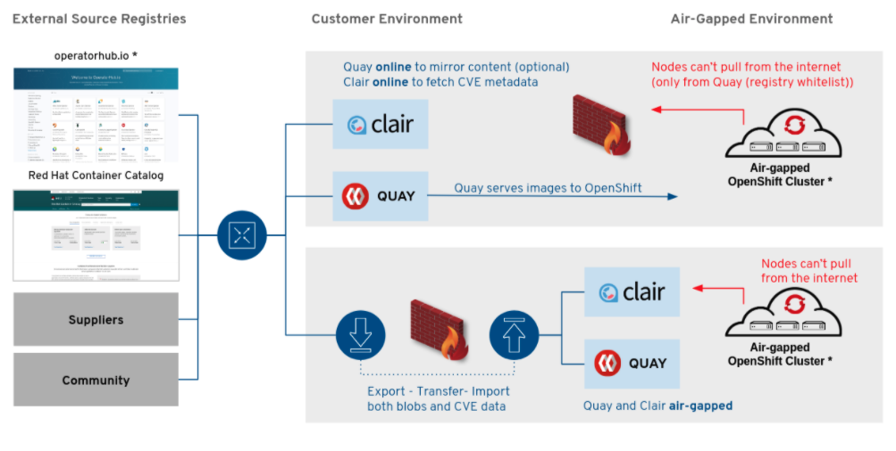

Red Hat Quay Architecture
Red Hat Quay Architecture
Abstract
Chapter 1. Red Hat Quay features
Red Hat Quay is a trusted, open source container registry platform that runs everywhere, but runs best on Red Hat OpenShift. It scales without limits, from a developer laptop to a container host or Kubernetes, and can be deployed on-premise or on public cloud. It provides global governance and security controls, with features including image vulnerability scanning, access controls, geo-replication and repository mirroring.

This guide provides an insight into architectural patterns to use when deploying Red Hat Quay. It contains sizing guidance and deployment prerequisites, along with best practices for ensuring high availability for your Quay registry.
Chapter 2. Core functionality
- High availability
- Full standards / spec support
- Long-Term protocol support
- OCI compatibility
- Enterprise grade support
- Regular updates
2.1. Infrastructure
Quay runs on any physical or virtual infrastructure, both on-premise or public cloud. Deployments range from simple to massively scaled, including:
- All-in-one setup on a developer laptop
- Highly available on OpenShift
- Geographically dispersed setup across multiple availability zones and regions
2.1.1. Quay on standalone hosts
- Poof-of-concept deployment, where Quay runs on the same machine as the image storage, database, Redis and optionally, Clair security scanning
-
Highly available setups running on multiple hosts, using
systemdto ensure restart on failure/reboot
Standalone deployment is typically a manual process, but it can be automated using Ansible. All standalone hosts require valid RHEL subscriptions.
2.1.2. Quay on OpenShift
Running Quay on OpenShift provides many benefits:
- Automated scaling and updates
- Quay Operator can manage Quay and all dependencies
- Automated deployment and Day 2 management of Red Hat Quay with customization options
- Integration with existing OpenShift processes like GitOps, monitoring, alerting, logging
Quay can run on OpenShift infra nodes, meaning no further subscriptions are required.
2.1.3. Quay on public cloud
Quay can run on public clouds, either in standalone mode or where OpenShift itself has been deployed on public cloud.
Recommendation: If Quay is running on public cloud, then you should use the public cloud services for Quay backend services to ensure proper HA and scalability
2.1.4. Image storage backend
Quay stores all binary blobs in its storage backend
Local storage and NFS only for PoC / test setups
Quay HA requires an HA storage setup
Geo-replication requires object storage and does not work with local storage
2.1.4.1. Supported on-prem storage types
- Ceph Rados RGW
- OpenStack Swift
- RHODF 4 (via NooBaa)
- RHOCS 3 (via NooBaa) (TP) TODO Check
2.1.4.2. Supported public cloud storage types
- AWS S3
- Google Cloud Storage
- Azure Blob Storage
2.1.5. Database backend
Quay stores most of its configuration and all metadata and logs inside its database backend. Logs can be pushed into ElasticSearch instead
PostgreSQL is the preferred database backend since it can be used for both Quay and Clair
Quay works fine with MySQL too (5.7+) but Clair requires PostgreSQL
Quay HA requires an HA database setup
If Quay is running on public cloud infrastructure, we recommend the use of the PostgreSQL services provided by your cloud provider.
Geo-replication requires a single, shared database that is accessible from all regions
2.2. Running Red Hat Quay on Public Cloud
A full list of tested and supported configurations can be found in the Red Hat Quay Tested Integrations Matrix at https://access.redhat.com/articles/4067991
2.2.1. Running Red Hat Quay on AWS

If Red Hat Quay is running on AWS, you can use
- AWS Elastic Load Balancer
- AWS S3 (hot) blob storage
- AWS RDS database
- AWS ElastiCache Redis
- EC2 VMs recommendation: M3.Large or M4.XLarge
2.2.2. Running Red Hat Quay on Microsoft Azure

If Quay is running on Microsoft Azure, you can use:
- Azure managed services such as HA PostgreSQL
- Azure Blob Storage must be hot storage (not Azure Cool Blob Storage)
- Azure Cache for Redis
Chapter 3. Security Overview
Red Hat Quay is built for real enterprise use cases where content governance and security are two major focus areas. {produtname} content governance and security includes a built-in vulnerability scanning via Clair.
Clair is an open source tool developed by CoreOS for Quay that generates analyses of vulnerabilities in application containers, which currently includes Open Container Initiative (OCI) and Docker images. Clients that use the Clair API to index their container images can then match their images against known vulnerabilities.
Clair supports the extraction of contents and assignment of vulnerabilities from the following official base containers:
- Ubuntu Linux
- Debian Linux
- Red Hat Enterprise Linux
- SUSE
- Oracle Linux
- Alpine Linux
- Amazon Linux
- VMWare Photon
- Python
Clair’s analysis can be broken down into three distinct parts:
Indexing: Indexing starts with submitting a
Manifestto Clair. On receipt, Clair will fetch layers, scan their contents, and return an intermediate representation called anIndexReport.Manifests are Clair’s representation of a container image. Clair leverages the fact
OCI ManifestsandLayersare content-addressed to reduce duplicated work.Once a
Manifestis indexed, theIndexReportis persisted for later retrieval.Matching: Matching is taking an
IndexReportand correlating vulnerabilities affecting theManifestthe report represents.Clair continuously ingests new security data and a request to the matcher will always provide users with the most to date vulnerability analysis of an
IndexReport.-
Notifications: Clair implements a notification service. When new vulnerabilities are discovered, the notifier service will determine if these vulnerabilities affect any indexed
Manifests. The notifier will then take action according to its configuration.
3.1. Clair v4
Released with Red Hat Quay 3.4, Clair v4 is the latest version of Clair. It is built on a new architecture consisting of Clair Core and a service wrapper. Clair v4 made several enhancements to Clair v2, including:
- Support for the Python programming language package. Support for additional languages is planned for future versions of Clair and Red Hat Quay.
- Immutable data model and a new manifest-oriented API.
- Refocus on the latest Open Container Initiative (OCI) specifications.
- Image hashes and layer hashes are now treated as content addressable, so that images are uniquely identified as a whole.
3.1.1. Clair v2 and Clair v4 Comparison
Table 3.1. Kubernetes services that run on the control plane
| Component | Clair v2 |
|---|---|
|
Clair v4 |
API layers |
|
In Clair v2, clients were required to provide layers to the API. |
In Clair v4 is manifest-based, providing an easier API for users. |
|
Insights and reports |
Clair v2 provided only insights on vulnerabilities |
|
Clair v4 provides detailed reports on the content of the container, which can be fed to other tools for analyses or inventory purposes. |
Architecture |
|
Clair v2 ran as a monolithic application. |
Clair v4 divides functionality across multiple services for ease of development and scaling use cases. |
|
Support for language packages |
Clair v2 does not support computer language packages. |
|
Clair v4 supports Python language packages, with plans of adding more in future versions. |
Package locator |
|
Clair v2 did not provide details on where packages were located inside of the container. |
Clair v4 identifies where packages are located inside of the container. |
3.1.2. Migrating from Clair v2 to Clair v4
Starting with Red Hat Quay 3.4, Clair v4 will be used by default. It will also be the only version of Clair continuously supported, as older Red Hat Quay versions are not supported with Clair v4 in production. Users should continue using Clair v2 if using a version of Red Hat Quay earlier than 3.4.
Existing Red Hat Quay 3.3 deployments will be upgraded to Clair v4 when managed via the Red Hat Quay Operator. Manually upgraded Red Hat Quay deployments can install Clair v4 side-by-side, which will cause the following:
+ * All new image vulnerability scans to be performed by Clair v4 * Existing images to be rescanned by Clair v4
logging and auditing, and notifications and alerting, and other features to federate content across your clusters, data centers, and regions.
- Vulnerability scanning
- Logging and auditing
- Notifications and alerting
3.2. Vulnerability scanning via Clair
Chapter 4. Content distribution
Content distribution features in Red Hat Quay include:
4.1. Repository mirroring
Red Hat Quay repository mirroring lets you mirror images from external container registries (or another local registry) into your Red Hat Quay cluster. Using repository mirroring, you can synchronize images to Red Hat Quay based on repository names and tags.
From your Red Hat Quay cluster with repository mirroring enabled, you can:
- Choose a repository from an external registry to mirror
- Add credentials to access the external registry
- Identify specific container image repository names and tags to sync
- Set intervals at which a repository is synced
- Check the current state of synchronization
To use the mirroring functionality, you need to:
- Enable Repository Mirroring in the Red Hat Quay configuration
- Run a repository mirroring worker
- Create mirrored repositories
All repository mirroring configuration can be performed using the configuration tool UI or via the Quay API
4.1.1. Using repository mirroring
Here are some features and limitations of Red Hat Quay repository mirroring:
- With repository mirroring, you can mirror an entire repository or selectively limit which images are synced. Filters can be based on a comma-separated list of tags, a range of tags, or other means of identifying tags through regular expressions.
- Once a repository is set as mirrored, you cannot manually add other images to that repository.
- Because the mirrored repository is based on the repository and tags you set, it will hold only the content represented by the repo/tag pair. In other words, if you change the tag so that some images in the repository no longer match, those images will be deleted.
- Only the designated robot can push images to a mirrored repository, superseding any role-based access control permissions set on the repository.
- With a mirrored repository, a user can pull images (given read permission) from the repository but not push images to the repository.
- Changing settings on your mirrored repository is done from the Mirrors tab on the Repositories page for the mirrored repository you create.
- Images are synced at set intervals, but can also be synced on demand.
4.1.2. Repository mirroring recommendations
- Repository mirroring pods can run on any node including other nodes where Quay is already running
- Repository mirroring is scheduled in the database and run in batches. As a result, more workers could mean faster mirroring, since more batches will be processed.
The optimal number of mirroring pods depends on:
- The total number of repositories to be mirrored
- The number of images and tags in the repositories and the frequency of changes
- Parallel batches
- You should balance your mirroring schedule across all mirrored repositories, so that they do not all start up at the same time.
- For a mid-size deployment, with approximately 1000 users and 1000 repositories, and with roughly 100 mirrored repositories, it is expected that you would use 3-5 mirroring pods, scaling up to 10 if required.
4.1.3. Event notifications for mirroring
There are three notification events for repository mirroring:
- Repository Mirror Started
- Repository Mirror Success
- Repository Mirror Unsuccessful
The events can be configured inside the Settings tab for each repository, and all existing notification methods such as email, slack, Quay UI and webhooks are supported.
4.1.4. Mirroring API
You can use the Quay API to configure repository mirroring:

More information is available in the Red Hat Quay API Guide
4.2. Geo-replication
Geo-replication allows multiple, geographically distributed Quay deployments to work as a single registry from the perspective of a client or user. It significantly improves push and pull performance in a globally-distributed Quay setup. Image data is asynchronously replicated in the background with transparent failover / redirect for clients.
4.2.1. Geo-replication features
- When geo-replication is configured, container image pushes will be written to the preferred storage engine for that Red Hat Quay instance (typically the nearest storage backend within the region).
- After the initial push, image data will be replicated in the background to other storage engines.
- The list of replication locations is configurable and those can be different storage backends.
- An image pull will always use the closest available storage engine, to maximize pull performance.
- If replication hasn’t been completed yet, the pull will use the source storage backend instead.
4.2.2. Geo-replication requirements and constraints
- A single database, and therefore all metadata and Quay configuration, is shared across all regions.
- A single Redis cache is shared across the entire Quay setup and needs to accessible by all Quay pods.
-
The exact same configuration should be used across all regions, with exception of the storage backend, which can be configured explicitly using the
QUAY_DISTRIBUTED_STORAGE_PREFERENCEenvironment variable. - Geo-Replication requires object storage in each region. It does not work with local storage or NFS.
- Each region must be able to access every storage engine in each region (requires a network path).
- Alternatively, the storage proxy option can be used.
- The entire storage backend (all blobs) is replicated. This is in contrast to repository mirroring, which can be limited to an organization or repository or image.
- All Quay instances must share the same entrypoint, typically via load balancer.
- All Quay instances must have the same set of superusers, as they are defined inside the common configuration file.
If the above requirements cannot be met, you should instead use two or more distinct Quay deployments and take advantage of repository mirroring functionality.
4.2.3. Geo-replication architecture

In the example shown above, Quay is running in two separate regions, with a common database and a common Redis instance. Localized image storage is provided in each region and image pulls are served from the closest available storage engine. Container image pushes are written to the preferred storage engine for the Quay instance, and will then be replicated, in the background, to the other storage engines.
The following block diagram shows a possible distribution of resources where Quay has been deployed on two OpenShift clusters using the Operator:

4.2.4. Mixed storage for geo-replication
Quay geo-replication supports the use of different, and multiple, replication targets for example, using AWS S3 storage on public cloud and using Ceph storage on-prem. This complicates the key requirement of granting access to all storage backends from all Quay pods and cluster nodes. As a result, it is recommended that you:
- Use a VPN to prevent visibility of the internal storage or
- Use a token pair that only allows access to the specified bucket used by Quay
This will result in the public cloud instance of Quay having access to on-prem storage but the network will be encrypted, protected, and will use ACLs, thereby meeting security requirements.
If you cannot implement these security measures, it may be preferable to deploy two distinct Quay registries and to use repository mirroring as an alternative to geo-replication.
4.3. Repository mirroring versus geo-replication
Quay geo-replication mirrors the entire image storage backend data between 2 or more different storage backends while the database is shared (one Quay registry with two different blob storage endpoints). The primary use cases for geo-replication are:
- Speeding up access to the binary blobs for geographically dispersed setups
- Guaranteeing that the image content is the same across regions
Repository mirroring synchronizes selected repositories (or subsets of repositories) from one registry to another. The registries are distinct, with registry is separate database and image storage. The primary use cases for mirroring are:
- Independent registry deployments in different datacenters or regions, where a certain subset of the overall content is supposed to be shared across the datacenters / regions
- Automatic synchronization or mirroring of selected (whitelisted) upstream repositories from external registries into a local Quay deployment
Repository mirroring and geo-replication can be used simultaneously.
Table 4.1. Red Hat Quay Repository mirroring versus geo-replication
| Feature / Capability | Geo-replication | Repository mirroring |
|---|---|---|
|
What is the feature designed to do? |
A shared, global registry |
Distinct, different registries |
|
What happens if replication or mirroring hasn’t been completed yet? |
The remote copy is used (slower) |
No image is served |
|
Is access to all storage backends in both regions required? |
Yes (all Red Hat Quay nodes) |
No (distinct storage) |
|
Can users push images from both sites to the same repository? |
Yes |
No |
|
Is all registry content and configuration identical across all regions (shared database) |
Yes |
No |
|
Can users select individual namespaces or repositories to be mirrored? |
No,by default |
Yes |
|
Can users apply filters to synchronization rules? |
No |
Yes |
4.4. Air-gapped / disconnected deployments
- Quay and Clair connected to the internet, with an air-gapped OpenShift cluster accessing the Quay registry through an explicit, white-listed hole in the firewall
- Quay and Clair running inside the firewall, with image and CVE data transferred to the target system using offline media. The data is exported from a separate Quay and Clair deployment that is connected to the internet.

4.4.1. Using Clair in air-gapped environments
By default, Clair will attempt to run automated updates against Red Hat servers. To run Clair in network environments that are disconnected from the internet:
- Disable Clair auto-update in the Clair configuration bundle
- Manually update the vulnerability database on a system with internet access and then export to disk
- Transfer the on-disk data to the target system using offline media and then manually import it into Clair
Using Clair in air-gapped environments is fully containerized and, as a result, is easy to automate.
Chapter 5. Access control
- Authentication providers
- Fine-grained RBAC
- Organizations and teams
Chapter 6. Scalability
- Massive scale testing Quay.io
- Real-time garbage collection
- Automated squashing
Chapter 7. Build automation
- Seamless Git integration
- Build workers
- Webhooks
Chapter 8. Integration
- Extensible API
- Webhooks, OAuth
- Robot Accounts